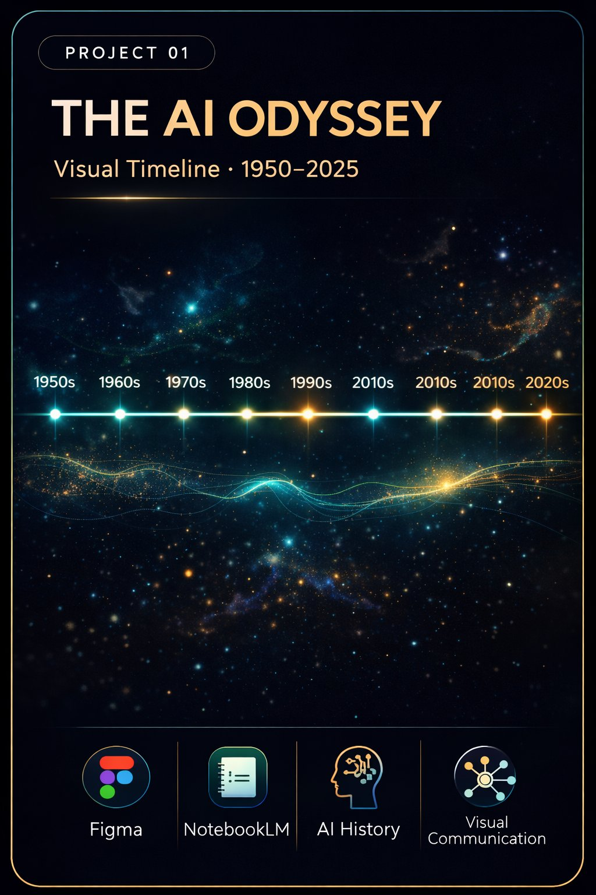
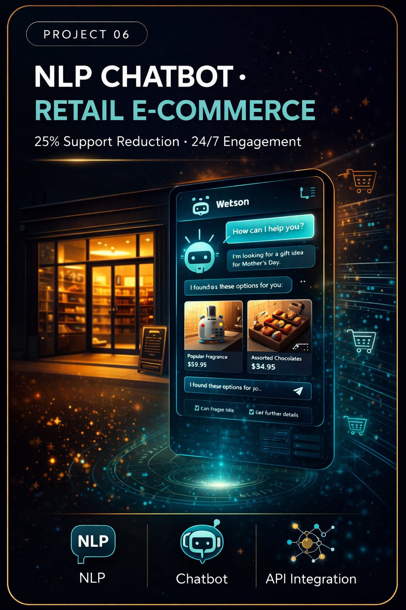
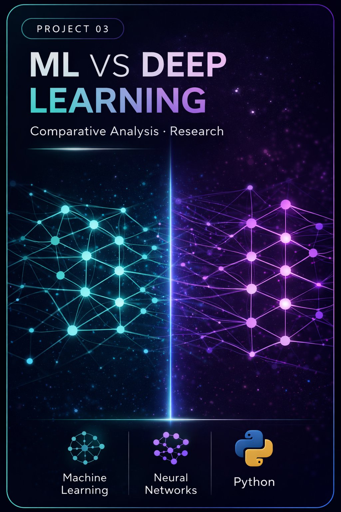
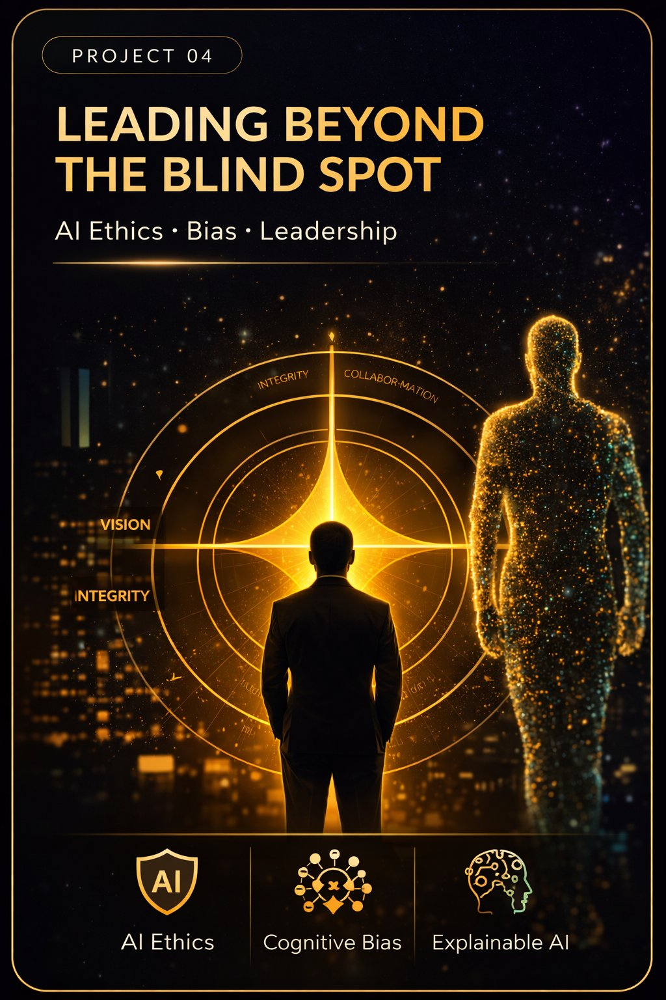
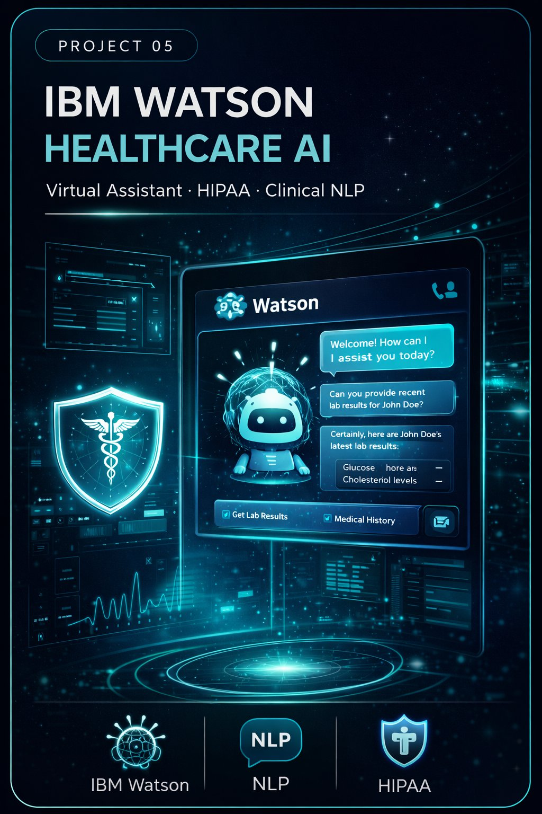

Portfolio
Featured Projects

Academic · AI/ML · Visual Design
The AI Odyssey: Visual Timeline (1950–2025)
A visual timeline tracing AI evolution from symbolic systems to modern generative AI. Designed in Figma with color-coded eras.
FigmaNotebookLMAI History

Enterprise · Retail AI · NLP
NLP Chatbot — Retail E-Commerce Platform
AI-powered NLP chatbot reducing support volume by 25% and enabling 24/7 personalized engagement for a major retail brand.
NLPChatbot ArchitectureAPI Integration

Academic · Machine Learning · Research
ML vs Deep Learning: Automotive Case Study
Comparative analysis through GM OnStar churn prediction (ML) and Waymo autonomous driving (deep learning).
Machine LearningDeep LearningAutomotive AI

Academic · AI Ethics · Leadership
Architecting Fair Automotive AI
Research on bias, fairness, and ethical AI design in automotive systems with actionable guardrail frameworks.
AI EthicsCognitive BiasExplainable AI

Enterprise · Healthcare AI · IBM Watson
IBM Watson Healthcare AI Assistant
IBM Watson virtual assistant across a large US healthcare network — 40% admin reduction with HIPAA-compliant clinical AI.
IBM WatsonHIPAANLPEHR

Academic · Data Analytics · Python
Netflix Data Analytics — The $1B Content Strategy
Analyzed 8,807 Netflix titles with Excel and Python, uncovering the personalization strategy behind $1B annual savings.
PythonExcelData Analytics